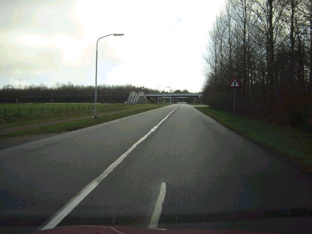
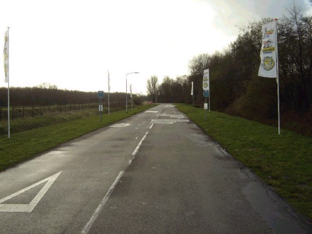
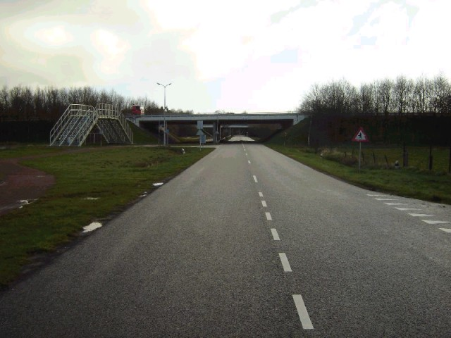
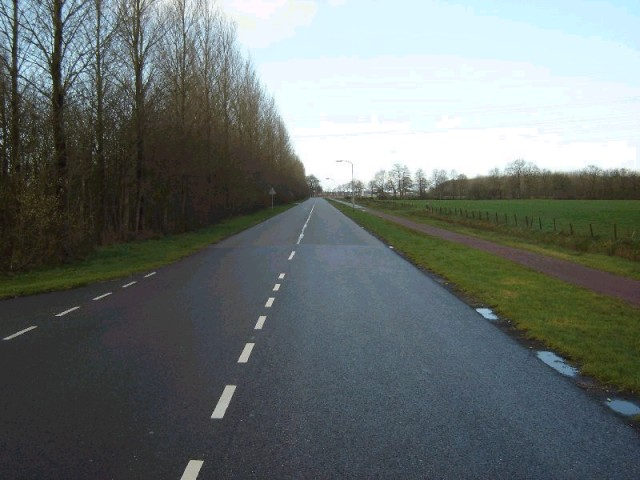
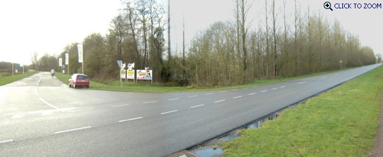
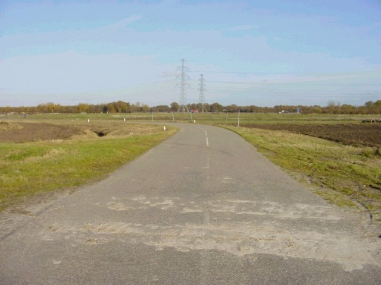

Numbers on the map represent the location where the photographs were taken. Click hyperlinks above to view the photographs.
Assen - Pre-1984 Section (Part B) [Page 5 of 5]
Contents || Entrance & Pitlane | Grandstand Views | Paddock Views | Pre-1984 (Part A) | Pre-1984 (Part B) || Home
Numbers on the map represent the location where the photographs were taken. Click
hyperlinks above to view the photographs.

25

26

27 - Looking towards Bedeldijk.

28 - Looking towards the road that was part
of the circuit till 1954.

29 - Looking back to the Haarbocht.

P6 - [Click to Zoom In - 213kb]

30 - Just outside the circuit at the Madijk
corner, this corner was also part of the circuit in the early 80's.
Return to racingcircuits.net's Photo Archive Main Index
©2003, 2004 & 2005 Roelard Smit. Reproduced here with kind permission.